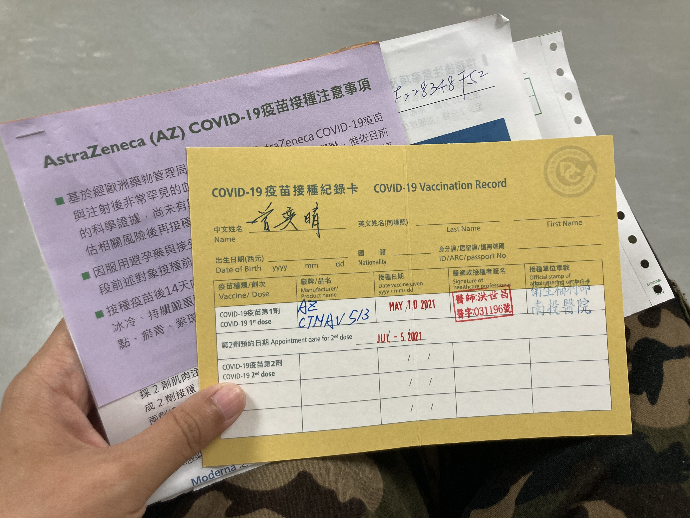

奕晴與疫情的正面對決
奕晴與疫情的正面對決。
幾天前去接種了通過緊急使用權的 AZ 疫苗，儘管副作用仍是誇張的強、儘管在國際間仍有血栓發生的疑慮，但還是認為，目前國際和國內的疫情現況都不穩定，打了疫苗算是保護自己也是保護身邊的人，同時，台灣的首批 AZ 疫苗在六月即將到期，如果到期了卻還沒施打完，真的是可惜了這樣的醫療資源。這裡想分享一下施打的過程給大家參考，我是在衛服部南投醫院施打的。
關於施打條件。
目前施打有兩個管道，自費與公費，兩者都需要先和疫苗接種院所預約掛號（https://www.cdc.gov.tw/Category/List/u4l1b_gHhf9WDjhEtRmRRw）。自費施打的對象，是針對有出國需求的人，像是留學（e.g., 我）、工作、從商…，但就算沒有出國需求，目前醫院也可接受「預防性接種」這樣的理由，自費的費用約是新台幣 550 。公費施打的對象，自 5/10 起開放給軍人與 65 歲以上長者，只要付醫院的掛號費即可，大約新台幣 100 左右。
關於副作用。
施打後，會需要在注射室外觀察半小時，以免急性的過敏反應。我在當下都沒甚麼感覺，甚至兩點打完疫苗，傍晚還去打了激烈的桌球（死小孩），一直到晚上回到家身體都沒有甚麼反應，直到真的副作用開始…
疫苗施打完 12 小時（Day 1 凌晨兩點），開始出現施打處腫痛、半身痠痛、全身無力、頭痛、鼻塞、四肢冰冷。那時已經睡不太著了，一路淺眠到天亮。
施打完 18 小時（Day 1 早上八點），開始發燒、全身痠痛、全身無力、頭痛、輕微腹瀉。基本上，這時候除了躺在床上，就已經甚麼都不能做，甚至連下床喝水都需要很大的決心（笑）。接下來就是發燒四肢無力的症狀越來越強，像是整個身體脹起來似的，一路睡睡醒醒，有睡著的時候就會感覺舒服一些，一醒來就開始頭痛、無力，而且左手痠痛到幾乎舉不起來。開始懷疑人生，覺得為什麼昨天可以有力氣去打球…。
施打完 24 小時（Day 1 下午兩點），前面的症狀一直延續，而且沒甚麼食慾，吃了一點東西又躺回床上，但這時似乎已經到了副作用的最高峰，下午四五點身體就開始流汗，有開始流汗就會開始舒緩發燒。
施打完 30 小時（Day 1 晚上八點），沖個澡，幾乎已經燒退，雖身體還沒甚麼力氣，還有點頭痛，但可以出門散步，有試著到辦公室做點事情，但一看電腦就頭痛，趕緊跑回家。
施打完 42 小時（Day 2 早上八點），除了一點痠痛跟頭痛，已經完全復活。
關於事前準備。
因為施打完後隔天完全無法動彈的緣故，建議獨居者（!?）前一天先準備好充足的糧食與非常多的水（你會需要的）。然後也要準備好好朋友們（!?），超感謝在我躺在床上時有 S 與 Y 陪我聊天，還有 C、D、V 接受我的申請餐點外送，Y 跟 J 不停捎來問候確認我還沒昏倒，還有某人怕我太無聊傳來的數學題，讓我躺在床上也能動動腦。是個辛苦，但是溫暖的一天噢。也希望大家對於疫苗有更多了解，疫情迅速過去（祈禱）。
